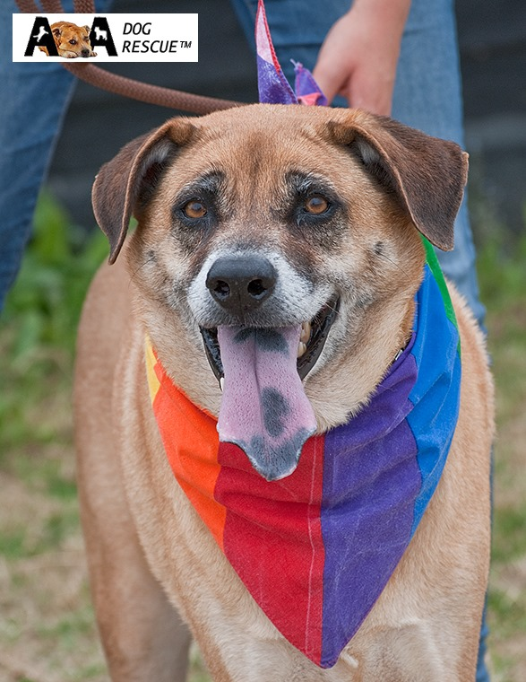
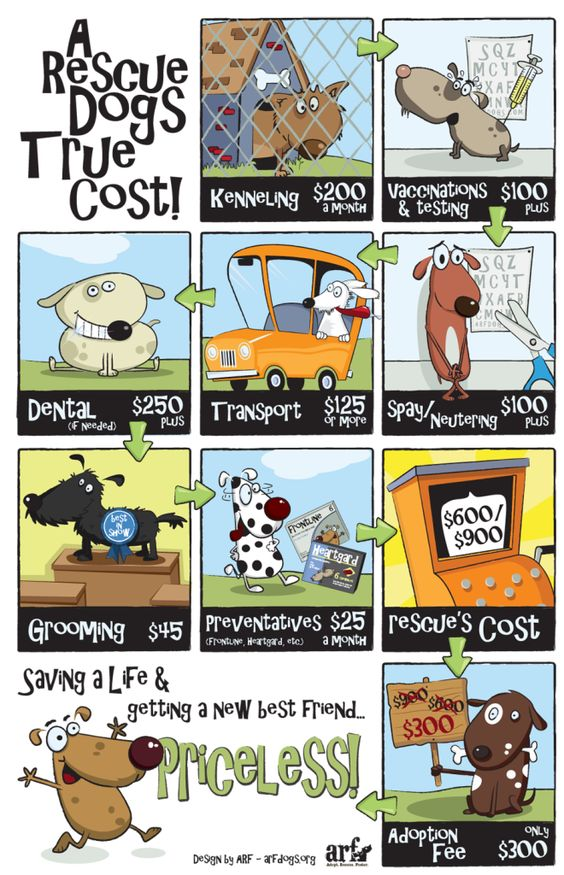

Thank you for visiting our website; created to spread the word about our aim to help abandoned and alone dogs from all walks of life.
Why not have a look at our About Us page to see our mission. You can also see more information about the founders of AA Dog Rescue and the different people that work to make us successful and possible.
With your help, AA Dog Rescue can make such a difference. Just look at all the dogs we have saved.
Can you rehome a dog? Or donate your time? Take a look at our how to help page page. Any help you can offer might just be the difference needed to save another dog.
Take a look at For Adoption page to see all the dogs that need a helping hand as well as all the dogs we have saved at Happily Homed.
We are a non profit organisation, DEFRA and TRACES approved.
EVENTS & NEWS
New Opening Hours for email/telephone enquiries ONLY
AADR is now open from 11am to 4pm every day except Mondays & Tuesdays. Visits are by strict appointment only - please call prior to visiting. New address
We are delighted to announce that we have new kennels at Bradwell on Sea (we are no longer at Latchingdon). Visits are by strict appointment only - please call prior to visiting.
Dogs for Adoption
You will see some fabulous new photography of our dogs appearing on this site and our Facebook page, Please check out the dogs that are available by going to our "For Adoption" tab by clicking here!.
Our Dog Of The Month!

Finlay
Finlay & his canine friend Ella have come into rescue together. They were originally rescued from a Chinese Meat Market when they were young. They now find themselves in need of a new home.
Finlay is 11-12 years old and has been well looked after. Albeit he has been put on a diet! He is sociable with other dogs and walks well on a lead.
THIS DOG IS IN THE UK AND AVAILABLE FOR ADOPTION NOW!
If you are interested in adopting him we would love to hear from you.
If so, please download our Homing Questionnaire on this link: http://www.aadogrescue.org.uk/how-to-adopt and return it by email to: homing@aadogrescue.org.uk. Alternatively please email for further information.
Click on his photo above to see more photographs of
Finlay on our Facebook page.
AA DOG RESCUE - WHEN YOU BELIEVE! (2019)
Just a little taste of what we do with your incredible support ....
Feature Dogs for Adoption
We now feature a select few of our dogs on a special page. They may have been with us a while and are being seriously overlooked through no fault of their own or they may be older or have medical needs.
It may be that they are none of the above, just that they are a fond favourite of our team and we want to feature them in the hope that you will fall in love with them as we have.
A SPANISH RESCUE DOGS TRUE EURO COSTS
We wanted to give you an idea of the true costs of bringing a Spanish rescue dog to the UK as we are often asked how much it costs in relation to the adoption fee we charge.
We are also frequently asked by our supporters if they can contribute towards sponsoring a Spanish dog for travel so this will give an idea of what the dogs need.
As always we thank everyone for their support. With your help these dogs have a future they wouldn't otherwise have.
If anyone wishes to sponsor a Spanish dog for travel a donation can be made by PayPal to: charley@aadogrescue.org.uk



Our Facebook Page